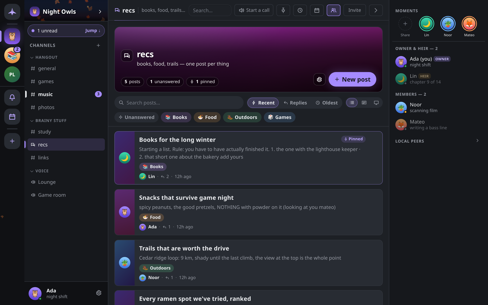

Forum boards
A forum channel is a board of posts, each with its own title and thread of replies. This page covers writing posts, tags, answered and closed posts, and sorting, filtering and laying out a board.
Creating a forum
A member with Manage channels creates one like any channel: + beside Channels → New channel → Forum. The Study group guild template includes a #questions forum. See Guilds and channels.
Posts
Open the forum channel to see its board. Click New post (on a phone, the round + button).
- Title: required, up to 200 bytes. A counter shows what is left.
- Tags: tap any of the forum's tags to put them on the post, up to 5.
- Body: the opening message. Markdown and the formatting toolbar both work, and you can paste or drop an image to attach it.
If you close the dialog with unsaved work, choose Keep writing, Discard or Save for later. A saved draft is kept on this device and comes back the next time you open New post in that forum; Start over clears it.
Click a post to read and reply. A post is an ordinary thread: replies, reactions, edits and attachments work as in any channel. The header above it leads back to the board. Posts do not appear as rows in the channel list; their unread counts add to the forum's row.
Members with Manage messages cannot pre-pin a post as they write it: a new post always arrives unpinned, and pinning is a separate step.
Managing a post
Open a card's Post actions menu (⋯), or right-click it.
| Action | Who can do it |
|---|---|
| Open post | Everyone |
| Mark answered / Mark unanswered | The post's author, and members with Manage messages |
| Edit tags… | The post's author, and members with Manage messages |
| Pin to board / Unpin from board | Members with Manage messages |
| Close post / Reopen post | Members with Manage messages |
| Delete post | The post's author, and members with Manage messages |
The author is whoever wrote the post's opening message, as recorded by the encrypted group, not a name anyone typed.
Marking a post answered leaves the conversation open. Closing a post stops new messages: every member's app refuses to send into it and drops anything that arrives for it, moderators included. Reopening it is a separate, recorded step. A modified client can still send to a closed post, but no honest member will see it.
Tags
Each forum has its own tag palette, edited in Board settings (the gear on the board's header) under Tags by members with Manage channels. Everyone else sees the palette read-only.
- Up to 20 tags per forum, and up to 5 per post.
- Each tag has a name (up to 24 characters), a color and an optional emoji.
- Click Save tags to publish the palette to everyone in the guild.
Deleting a tag removes it from the palette; posts that carried it simply stop showing it. If a forum has no tags yet, a member with Manage channels sees Create tags for this forum… in a post's menu.
Finding posts
The bar above the board holds:
- Search posts…: matches posts whose title, preview text or author name contain every word you type, ignoring case and accents. This searches the board only; for message search across everything, see Search.
- Sort: Recent activity (the default), Most replies or Oldest first. Pinned posts stay at the top in every order.
- Layout: List, Gallery or Cover (see below).
- Filter chips: Unanswered shows posts not marked answered that have no replies yet. Tag chips show posts carrying any of the selected tags. Clear resets the filters.
On a phone, sort and layout are together under View. The board's header also counts closed and pinned posts.
Layout and banner
Board settings → Board look offers three card layouts:
| Layout | Shape |
|---|---|
| List | Dense rows, thumbnail on the left |
| Gallery | Media on top, text underneath |
| Cover | Full-bleed art behind the title |
The layout is a reading preference stored on this device only; other members choose their own. Members with Manage channels can also set the forum's banner art (Auto, one of the preset banners, or Upload… an image of up to 384 KiB), which everyone in the guild sees.
